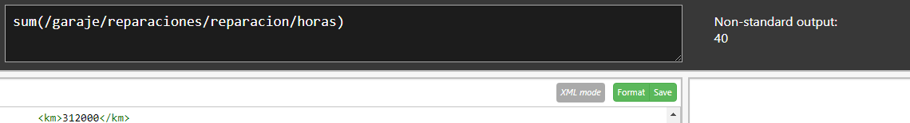

Tema 5 XPath
Ejercicio 1
- 1. Los elementos de cada coche.
/garaje/coches/coche
- 2. Los elementos de cada reparación.
/garaje/reparaciones/reparacion
- 3. El contenido de La matrícula de los coches.
/garaje/coches/coche/matricula
- 4. Todos los nodos (elementos y contenido) de los coches de la marca Renault.
/garaje/coches/coche[marca="Renault"]
- 5. Todos los nodos de los coches de más de 200000 km.
/garaje/coches/coche[km>200000]
- 6. El contenido del color del coche de matrícula 1234C.
/garaje/coches/coche[matricula="1234C"]/color
- 7. El contenido de la descripción de las reparaciones realizadas al coche de matrícula: 4444B.
/garaje/reparaciones/reparacion[matricula="4444B"]
- 8. El contenido de la descripción de la reparación de código J0005.
/garaje/reparaciones/reparacion[@codigo="J0005"]
- 9. Suma de las horas invertidas reparando coches.
sum(/garaje/reparaciones/reparacion/horas)

- 10. Número de coches en el documento.
count(/garaje/coches/coche)
- 11. Selecciona todos los elementos del primer coche.
/garaje/coches/coche[1]
- 12. Selecciona todos los elementos de la última reparación.
/garaje/reparaciones/reparacion[last()]
- 13. Selecciona todos los elementos del coche de la marca Seat con color Rojo.
/garaje/coches/coche[marca="Seat"][color="Rojo"]
- 14. Propietario del coche modelo Polo 1.2 Advance.
/garaje/coches/coche[modelo="Polo 1.2 Advance"]/*
- 15. Contenido de la descripción de las reparaciones realizadas con fecha de entrada 2013/06/06.
/garaje/reparaciones/reparacion[fecha_entrada="2013/06/06"]
- 16. Seleccionar los coches rojos y grises.
/garaje/coches/coche[color='Rojo' or color='Gris']/node()
- 17. Propietario del coche modelo Polo 1.2 Advance.
/actividades/actividad[fecha_inicio>="2018-01-01" and fecha_inicio<="2018-12-31"]/titulo/text()
- 18. Propietario del coche modelo Polo 1.2 Advance.
/actividades/actividad[fecha_inicio>="2018-01-01" and fecha_inicio<="2018-12-31"]/titulo/text()
- 19. Propietario del coche modelo Polo 1.2 Advance.
/actividades/actividad[fecha_inicio>="2018-01-01" and fecha_inicio<="2018-12-31"]/titulo/text()
- 20. Propietario del coche modelo Polo 1.2 Advance.
/actividades/actividad[fecha_inicio>="2018-01-01" and fecha_inicio<="2018-12-31"]/titulo/text()
- 21. Propietario del coche modelo Polo 1.2 Advance.
/actividades/actividad[fecha_inicio>="2018-01-01" and fecha_inicio<="2018-12-31"]/titulo/text()